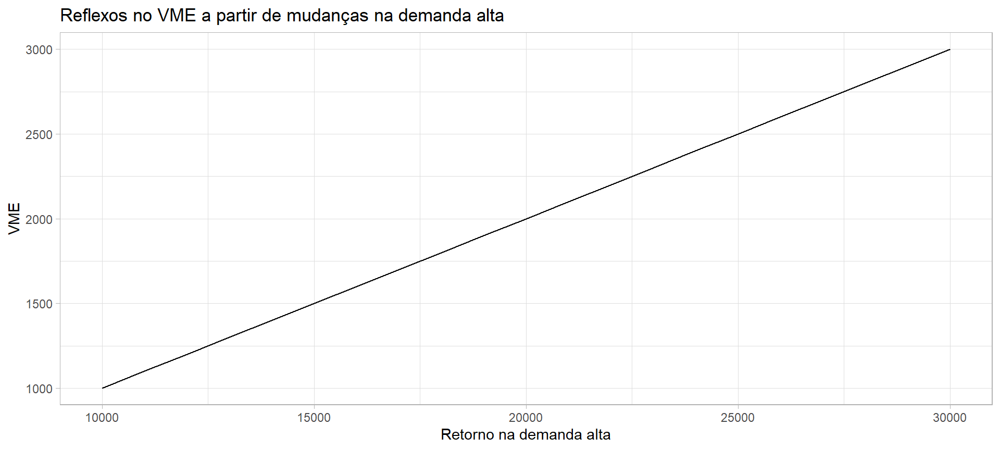
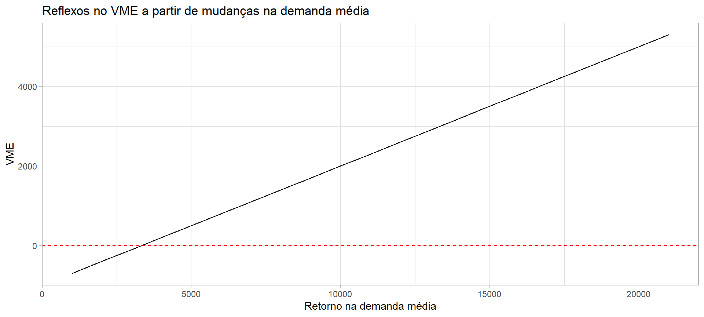

No problema das urnas não havia dúvida com relação aos ganhos ou perdas, bem como das probabilidades envolvidas, pois o espaço amostral e as regras de apostas estavam bem definidos.
Muitas vezes a situação não está bem clara e existem dúvidas com relação as probabilidade e aos valores envolvidos. Neste casos é muito comum se fazer o que se chama de análise de sensibilidade.
A análise de sensibilidade tem como objetivo avaliar se para diferentes cenários de valores (ou probabilidades), ocorre uma mudança na decisão inicialmente indicada. Vamos ver um exemplo simples para entendermos a questão.
library(ggplot2)ggplot(sens_vme, aes(x=alta, y=vme_a)) +geom_line() +theme_light() +labs(title ="Reflexos no VME a partir de mudanças na demanda alta") +xlab("Retorno na demanda alta") +ylab("VME")

ggplot(sens_vme, aes(x=media, y=vme_m)) +geom_line() +theme_light() +labs(title ="Reflexos no VME a partir de mudanças na demanda média") +xlab("Retorno na demanda média") +ylab("VME") +geom_hline(yintercept=0, linetype="dashed", color ="red")

ggplot(sens_vme, aes(x=baixa, y=vme_b)) +geom_line() +theme_light() +labs(title ="Reflexos no VME a partir de mudanças na demanda baixa") +xlab("Retorno na demanda baixa") +ylab("VME") +geom_hline(yintercept=0, linetype="dashed", color ="red")